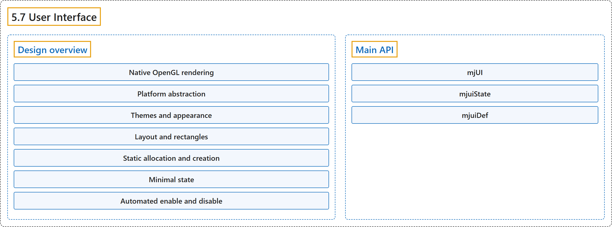

5.7 User Interface
Classification

Glossary
| Term | Definition | 中文翻译 | Source |
|---|---|---|---|
| 5.7 User Interface 用户界面 |
(context) "MuJoCo has a native UI framework." | （语境）MuJoCo 有一个原生的 UI 框架。 | Google DeepMind, n.d., "User Interface", para. 1 |
| Design overview 设计概述 |
(No definition) | （无定义） | Google DeepMind, n.d., "Design overview" |
| Native OpenGL rendering 原生 OpenGL 渲染 |
"We do not use any helper tools or libraries. Instead we provide C code for rendering all UI elements directly in OpenGL." | 我们不使用任何辅助工具或库，而是提供直接用 OpenGL 渲染所有 UI 元素的 C 代码。 | Google DeepMind, n.d., "Design overview", item 1 |
| Platform abstraction 平台抽象 |
"The software design has 3 layers: OpenGL rendering of UI elements working in conjunction with the MuJoCo renderer (which is fully cross-platform); abstract functions for access to windows, keyboard and mouse, defined as pure virtual functions in the PlatformUIAdapter class; and an implementation of those functions in the derived class GlfwAdapter." | 软件设计分为 3 层：与 MuJoCo 渲染器协同工作的 UI 元素 OpenGL 渲染（完全跨平台）；访问窗口、键盘和鼠标的抽象函数，定义为 PlatformUIAdapter 类中的纯虚函数；以及这些函数在派生类 GlfwAdapter 中的实现。 | Google DeepMind, n.d., "Design overview", item 2 |
| PlatformUIAdapter 平台 UI 适配器类 PlatformUIAdapter |
"The software design has 3 layers: OpenGL rendering of UI elements working in conjunction with the MuJoCo renderer (which is fully cross-platform); abstract functions for access to windows, keyboard and mouse, defined as pure virtual functions in the PlatformUIAdapter class; and an implementation of those functions in the derived class GlfwAdapter." | 软件设计分为 3 层：与 MuJoCo 渲染器协同工作的 UI 元素 OpenGL 渲染（完全跨平台）；访问窗口、键盘和鼠标的抽象函数，定义为 PlatformUIAdapter 类中的纯虚函数；以及这些函数在派生类 GlfwAdapter 中的实现。 | Google DeepMind, n.d., "Design overview", item 2 |
| GlfwAdapter GLFW 适配器类 GlfwAdapter |
"The software design has 3 layers: OpenGL rendering of UI elements working in conjunction with the MuJoCo renderer (which is fully cross-platform); abstract functions for access to windows, keyboard and mouse, defined as pure virtual functions in the PlatformUIAdapter class; and an implementation of those functions in the derived class GlfwAdapter." | 软件设计分为 3 层：与 MuJoCo 渲染器协同工作的 UI 元素 OpenGL 渲染（完全跨平台）；访问窗口、键盘和鼠标的抽象函数，定义为 PlatformUIAdapter 类中的纯虚函数；以及这些函数在派生类 GlfwAdapter 中的实现。 | Google DeepMind, n.d., "Design overview", item 2 |
| Themes and appearance 主题与外观 |
"Instead, we use themes for colors and spacing, and arrange all UI elements automatically." | 取而代之的是，我们用主题来规定颜色和间距，并自动排列所有 UI 元素。 | Google DeepMind, n.d., "Design overview", item 3 |
| Layout and rectangles 布局与矩形 |
"Each UI is one virtual rectangle, whose width is determined by the theme and whose height is determined by the sections, items within each section, and also the expand/collapse state of each section." | 每个 UI 是一个虚拟矩形，其宽度由主题决定，高度由各分区、每个分区中的条目以及各分区的展开或折叠状态决定。 | Google DeepMind, n.d., "Design overview", item 4 |
| Static allocation and creation 静态分配与创建 |
"Rather than allocating and deallocating a large number of objects corresponding to UI elements and linking them together, we create a single C struct (type mjUI) with static allocation supporting some maximum number of sections and elements; and then keep a record of how many are in use." | 我们不分配和释放大量对应 UI 元素的对象再把它们链接起来，而是创建单个静态分配的 C 结构体（类型 mjUI），支持一定的最大分区数和元素数，再记录实际用了多少。 | Google DeepMind, n.d., "Design overview", item 5 |
| Minimal state 最小状态 |
"The UI is designed to be as stateless as possible, so as to simplify development." | UI 设计为尽可能无状态，以简化开发。 | Google DeepMind, n.d., "Design overview", item 6 |
| Automated enable and disable 自动启用与禁用 |
"Each UI item can be assigned an integer category. Then a mjfItemEnable callback determines whether each category should be enabled or disabled, based on some program-specific conditions." | 每个 UI 条目可以被赋予一个整数类别。然后由一个 mjfItemEnable 回调根据程序特定的条件决定每个类别应启用还是禁用。 | Google DeepMind, n.d., "Design overview", item 7 |
| mjfItemEnable 条目启用回调类型 mjfItemEnable |
(context) "Then a mjfItemEnable callback determines whether each category should be enabled or disabled, based on some program-specific conditions." | （语境）然后由一个 mjfItemEnable 回调根据程序特定的条件决定每个类别应启用还是禁用。 | Google DeepMind, n.d., "Design overview", item 7 |
| Main API 主要 API |
(context) "Click on the links below for detailed API reference of the main UI data structures and functions." | （语境）点击下面的链接可查看主要 UI 数据结构和函数的详细 API 参考。 | Google DeepMind, n.d., "Main API", para. 1 |
| mjUI UI 结构体 mjUI |
"An entire UI." | 一个完整的 UI。 | Google DeepMind, n.d., "Main API", item 1 |
| mjuiState UI 状态结构体 mjuiState |
"Global UI state." | 全局 UI 状态。 | Google DeepMind, n.d., "Main API", item 2 |
| mjuiDef UI 定义结构体 mjuiDef |
"One entry in the definition table used for UI construction." | 用于构建 UI 的定义表中的一项。 | Google DeepMind, n.d., "Main API", item 3 |
References
Google DeepMind. (n.d.). User Interface. MuJoCo Documentation (Version 3.17.0). Retrieved October 31, 2026, from https://mujoco.readthedocs.io/en/stable/programming/ui.html